Premiers pas
| Fenêtre | Raccourci du bureau | Sert à |
|---|---|---|
| L'agent | « Agent IA » | Discuter avec l'IA et lui confier des missions (comme avant). |
| L'Atelier | « Atelier de l'agent » | Régler l'agent : agents, équipes, MCP, modèles, commandes, skills, sécurité. On n'y discute pas. |
Les deux se parlent : l'agent a un bouton Atelier en bas de sa colonne de gauche, et l'Atelier recharge l'agent ouvert à chaque enregistrement.
Rien à régler avant : au premier lancement, la fenêtre de l'agent se met d'elle-même en onglets verticaux (la colonne avec les boutons) et affiche le menu des agents.
- Dans la fenêtre de l'agent : bouton Atelier en bas de la colonne de gauche.
- Ou le raccourci du bureau « Atelier de l'agent », même quand l'agent est fermé.
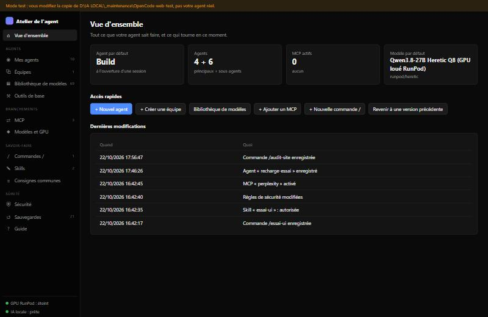
Ce qui se passe quand vous cliquez « Enregistrer »
- L'Atelier relit la config actuelle (si elle a changé ailleurs entre-temps, il vous demande de recharger la page).
- Il fait vérifier la nouvelle config par OpenCode lui-même, sur une copie. Si OpenCode refuse, rien n'est écrit et l'Atelier vous dit quoi corriger.
- Il sauvegarde l'ancienne version (les 20 dernières sont gardées).
- Il écrit, puis recharge l'agent ouvert : la modification est active tout de suite, sans fermer l'agent. Si l'agent est fermé, elle le sera au prochain lancement.
_maintenance\OpenCode-web-test), pas votre vrai agent.Agents
Écran Mes agents : la liste à gauche, la fiche de l'agent choisi à droite. Chaque fiche commence par « À quoi il sert ».
| Groupe | Ce que c'est |
|---|---|
| Agents principaux | Ceux du menu des agents dans la discussion (Build, Plan, et les vôtres en rôle « Principal »). |
| Sous-agents | Appelés par un autre agent (chef d'équipe) pour une partie du travail. |
| Fournis par OpenCode | General et Explore : sous-agents d'origine, modifiables mais pas supprimables. |
| Internes | Compaction, Title, Summary : OpenCode s'en sert seul, rien à régler. |
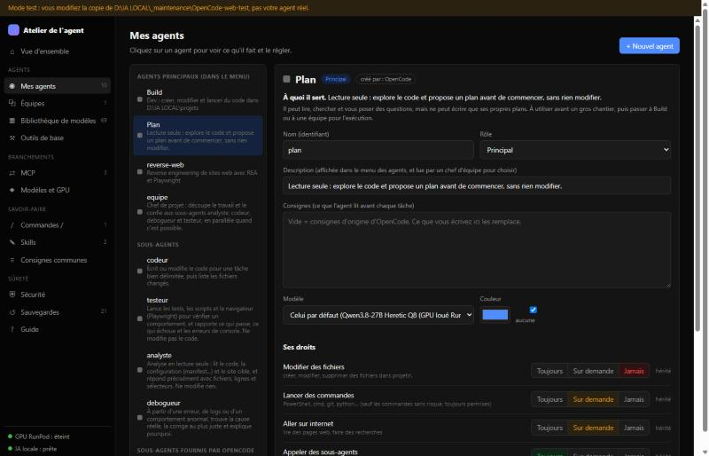
Les champs
- Nom : identifiant en minuscules, chiffres et tirets (ex.
relecteur-web). - Rôle : Principal (dans le menu), Sous-agent (appelé par un chef), ou les deux.
- Description : affichée dans le menu des agents, et lue par un chef d'équipe pour choisir à qui confier une tâche.
- Consignes : ce que l'agent lit avant chaque tâche. Pour un agent d'origine, vide = consignes d'OpenCode.
- Modèle : « celui par défaut » ou un modèle précis (ex. le rapide pour les petites tâches).
Les droits
Quatre interrupteurs : modifier des fichiers, lancer des commandes, aller sur internet, appeler des sous-agents. Chacun : Toujours Sur demande Jamais.
- hérité : l'agent n'a pas de règle à lui, la valeur vient des règles générales (Sécurité) ou d'OpenCode.
- personnalisé : l'agent a des règles détaillées (ex. « commandes interdites sauf
ls») : voyez le mode expert, qui montre et permet d'éditer les règles exactes. - Les commandes sans risque (
ls,dir,git status…) restent permises même « Sur demande ».
Autres boutons
Dupliquer (copie à modifier), Mettre par défaut (agent de chaque nouvelle session), Supprimer (vos agents seulement), case désactiver (retire l'agent du menu sans le supprimer).
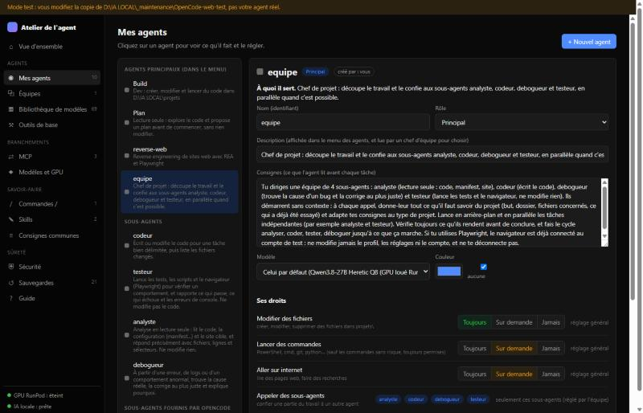
Bibliothèque de modèles
69 agents prêts à l'emploi, classés par catégorie, avec recherche. + Ajouter crée une copie dans Mes agents (en sous-agent) avec des consignes et des droits adaptés, à régler ensuite.
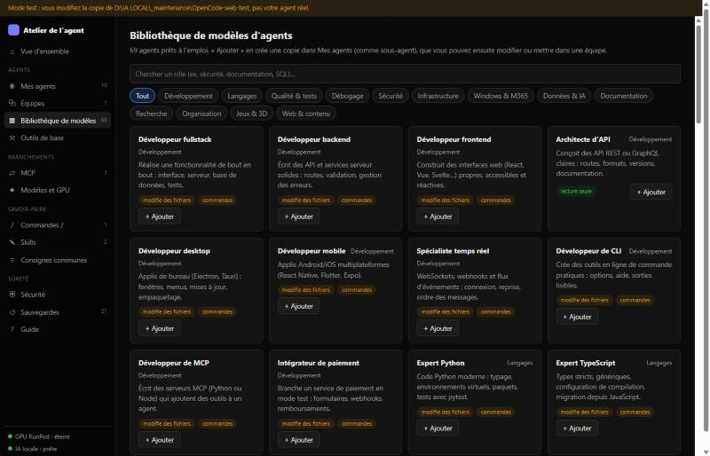
Équipes
Une équipe = un agent chef qui reçoit votre demande, la découpe et la confie à ses sous-agents, en parallèle quand c'est possible, puis fait la synthèse.
- Écran Équipes : donnez un nom au chef (ex.
equipe-web) et sa mission en une phrase. - Cochez ses sous-agents. Il manque un rôle ? Menu « + Ajouter un rôle depuis la bibliothèque » : il sera créé en même temps.
- Relisez l'aperçu (« Ce que l'Atelier va écrire »), puis Créer l'équipe.
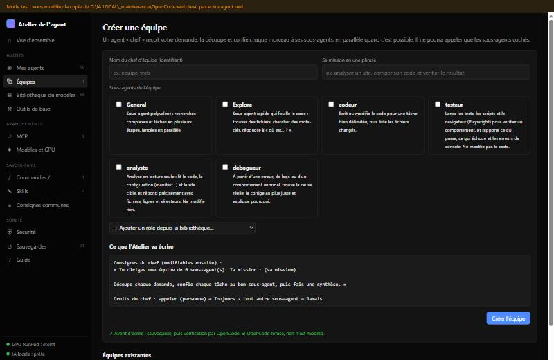
MCP
Des modules qui ajoutent des outils à l'agent (REA, navigateur, recherche web…).
- Interrupteur : activer / désactiver un MCP sans le retirer.
- Tester : démarre le MCP, vérifie qu'il répond et compte ses outils.
- Modifier : commande (programme sur la 1re ligne, un argument par ligne), dossier, délai de démarrage, variables.
- Ajouter depuis vos MCP de C:\MCP : la commande et les variables sont recopiées depuis la config de Claude Code, sans jamais afficher les valeurs secrètes.
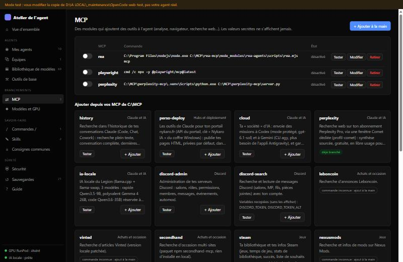
Modèles et GPU
- GPU loué RunPod : allumé ou éteint, prix à l'heure, bouton Arrêter le GPU (le compteur s'arrête ; relance depuis RunPod).
- IA locale : prête ou arrêtée, et le modèle en mémoire.
- Modèle par défaut et modèle de chaque agent : un menu par agent.
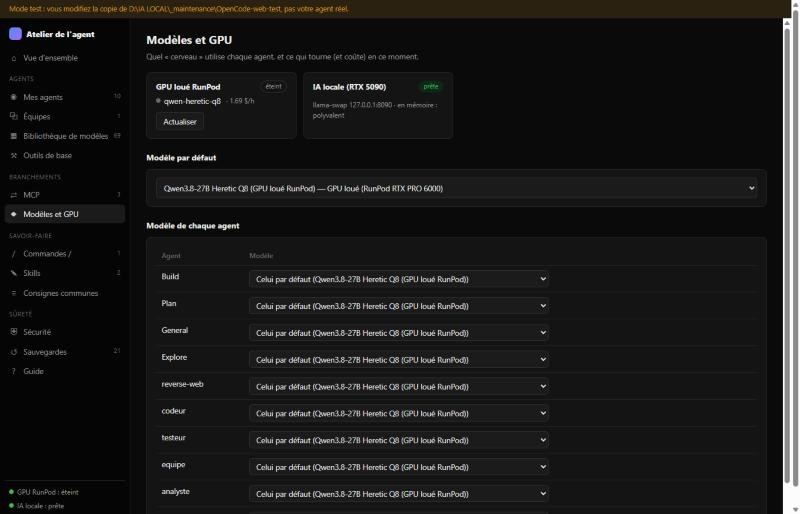
Commandes / et skills
/audit-site exemple.com) : elle envoie un message préparé à l'agent choisi. Une skill, c'est une fiche de méthode que l'agent charge tout seul quand la tâche s'y prête — comme les skills de Claude Code.Créer une commande
Nom (tapé après /), agent qui la reçoit, description, et le message. $ARGUMENTS est remplacé par ce que vous tapez après la commande.
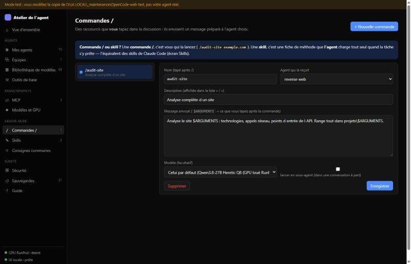
Créer une skill
Nom, description (c'est elle que l'agent lit pour décider de charger la fiche : soyez précis), et le contenu en Markdown. La case « autoriser » est cochée par défaut : sans elle, vos règles empêchent les agents de la charger. « Mettre de côté » range la skill dans les sauvegardes, elle n'est jamais effacée.
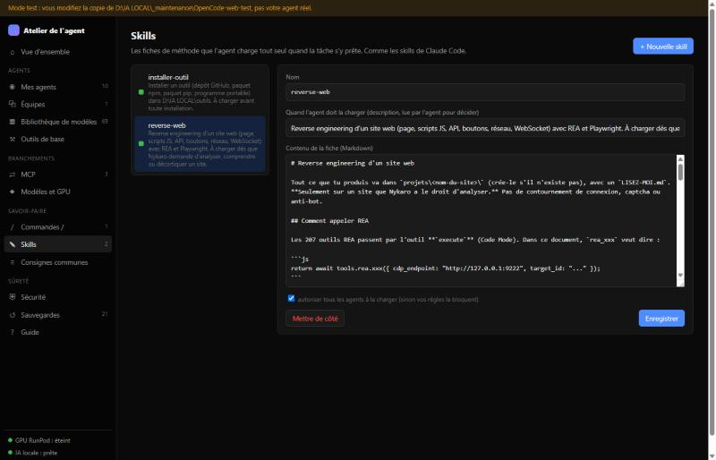
Consignes communes
Le fichier AGENTS.md, lu par tous les agents au début de chaque session.
Sécurité et sauvegardes
Sécurité
Les règles valables pour tous les agents. La dernière règle qui correspond gagne. Les lignes 🔒 protègent l'installation (sortir du dossier, modifier config, opencode, .donnees, lire ou modifier _maintenance) : elles ne peuvent pas être retirées ici.
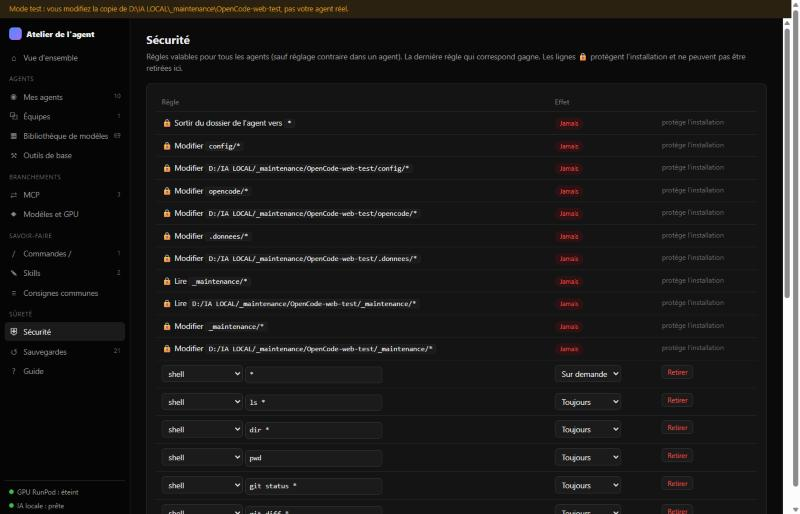
Sauvegardes
Une copie est faite avant chaque enregistrement (config, consignes, skills). Comparer montre les différences avec la version actuelle, Restaurer revient à cette version (en sauvegardant l'actuelle avant).
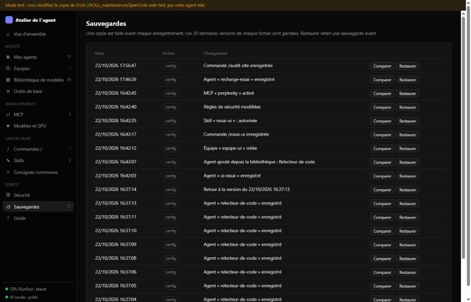
Dans la fenêtre de l'agent
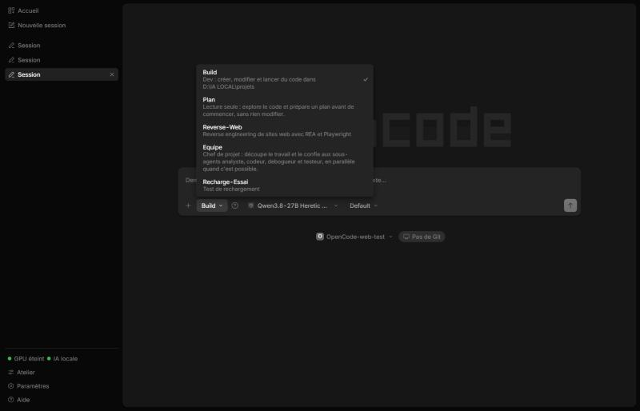
- Pastille : GPU loué allumé/éteint et IA locale. Un clic ouvre l'écran Modèles de l'Atelier.
- Atelier, Paramètres, Aide : toujours accessibles, même dans une discussion.
- Menu des agents : la description de chaque agent sous son nom.
- « ? » à côté du menu : ouvre la fiche de l'agent choisi dans l'Atelier.
Si ça coince
| Vous voyez | Que faire |
|---|---|
| « Rien n'a été modifié » avec une liste « Ce qu'OpenCode a refusé » | La config n'a pas été touchée. Corrigez le champ indiqué (souvent un nom ou un modèle) et réenregistrez. |
| « La config a été modifiée ailleurs… » | Rechargez la page de l'Atelier (F5), puis refaites votre changement. |
| « Agent fermé : prise en compte au prochain lancement » | Normal si la fenêtre de l'agent est fermée. |
| L'agent se comporte bizarrement après un changement | Sauvegardes → Comparer pour voir ce qui a changé → Restaurer. |
| Pas de colonne ni de bouton Atelier dans la fenêtre de l'agent | Les onglets sont en horizontal (en haut de la fenêtre) : Paramètres → Général → Apparence → Onglets → Verticale. Sans colonne, l'Atelier s'ouvre aussi par son raccourci du bureau. |
| Le bouton Atelier ne fait rien | Double-clic sur D:\IA LOCAL\_maintenance\Atelier-agent\Atelier.vbs (ou le raccourci du bureau). |
| Après une mise à jour d'OpenCode, plus de boutons ni de français | Agent fermé, double-clic sur _maintenance\OpenCode-francais\Patcher en français.cmd. L'Atelier lui-même n'est pas touché par les mises à jour. |